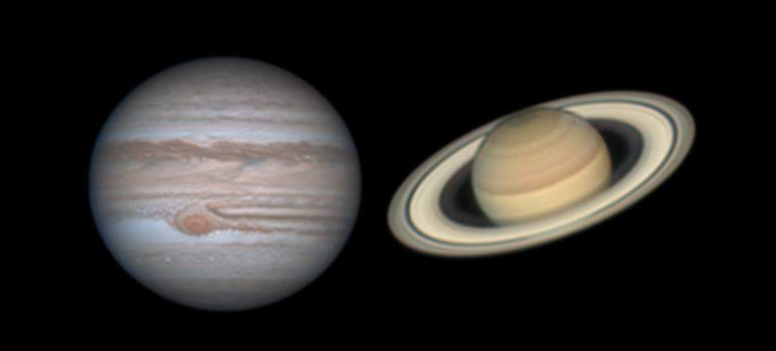
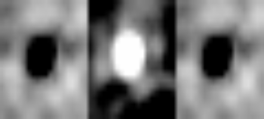

Naadiyah Jagga
Ph.D. Candidate in Physics & Astronomy
Research projects
How well can we determine the stellar masses of galaxies?
Supervisors: Prof. dr. Henk Hoekstra & dr. Alessandro Sonnenfeld
September 2020 - June 2021
The stellar mass in galaxies are key to understand, for example, observations compared to predictions with cosmological simulations. Multi-band observations define the population of stars in a galaxy that can be used to estimate the stellar mass based on the observed flux. Population synthesis is a technique to model spectra and photometry evolution of galaxies that will be used in this project. Stellar masses are influenced by different aspects such as the star formation history, the metallicity, and the initial mass function. We are generating stellar population models to try to recover the true model and to study what affects the results. Do they give consistent results or not? These studies are useful for the interpretation of data and the link between stars and dark matter in galaxies. This research is ongoing.
Link to code: github.

Internal structure of Jupiter and Saturn: comparison of different equations of state for dense water
Supervisor: dr. Yamila Miguel
September 2019 - July 2020
A significant amount of heavy elements is expected in the core and small fractions in the interior of Jupiter and Saturn. The distribution of heavy elements in their interior are important to understand their formation history. We aimed to study the differences between equations of state of ice and their differences when applied to the interior models of Jupiter and Saturn. Within a temperature-density range that includes all (exo)planets the pressure and entropy are computed and showed that differences in the entropy values between the equations were more prevalent at higher temperatures. CEPAM is used to create planetary models and matches the equation of state to observational constraints. Temperature profiles revealed differences between the equations and this resulted in significant differences in the core mass predictions and the heavy elements abundance in the deep envelope for Jupiter and Saturn. Yet is an accurate examination of the entropy calculation and the assumptions for the models necessary in the future before confirming any effect.
Ab initio equation of state of dense water: Mazevet et al. (2019).
Previous research on Jupiter's internal structure: Miguel et al. (2016).
Planetary modeling with CEPAM: Guillot & Morel (1995).

Difference imaging in MASCARA
Supervisor: Prof. dr. Ignas Snellen
February 2019 - June 2019
Difference imaging is introduced to MASCARA to test the ability of image subtraction for MASCARA observations. Since the MASCARA stations cover together the near-entire sky, and the stars in MASCARA observations remain in a pixel in one integration, variable sources could be detected using difference imaging. We aimed to search for variable sources in the sky, and to identify which type of sources are detectable with MASCARA. By performing image subtraction with help of ISIS and PSF photometry to obtain light curves 5 variable stars, 5 non-variable stars, and 4 unidentified targets are found in a small box of sky. The light curves have an uncertainty of approximately 3%. The identified variable sources were eclipsing and pulsating variable stars. Some light curves showed behaviour of variables but are not known as variable objects. Nevertheless, the period of the used data set is too short to report those stars as variables, hence, analysis over a larger box of sky and a longer time period will identify more variable sources.
Variable stars in MASCARA: Burggraaff et al. (2018).
The working of MASCARA: Talens et al. (2017).
Difference imaging with ISIS: Alard et al. (1998).